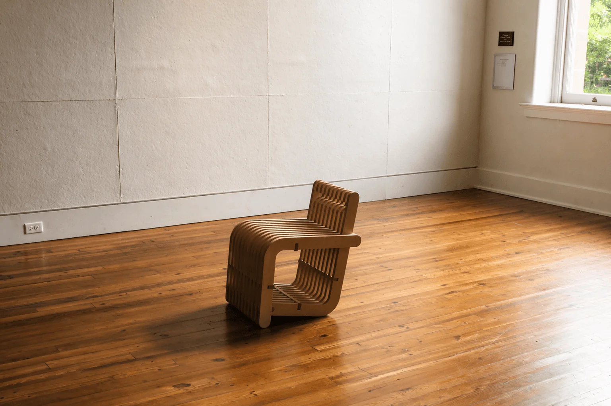
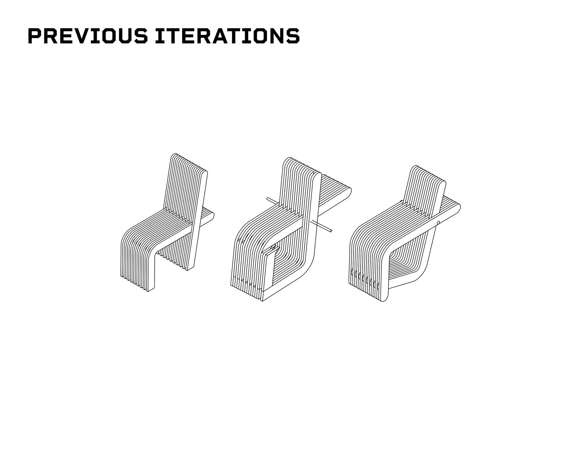
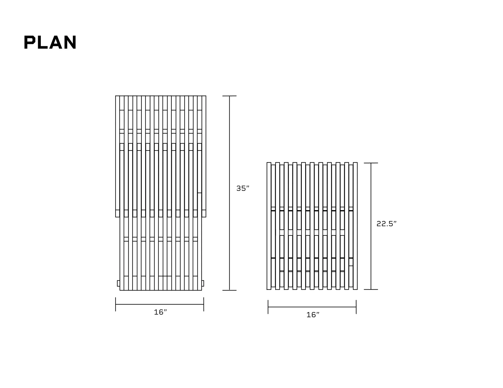
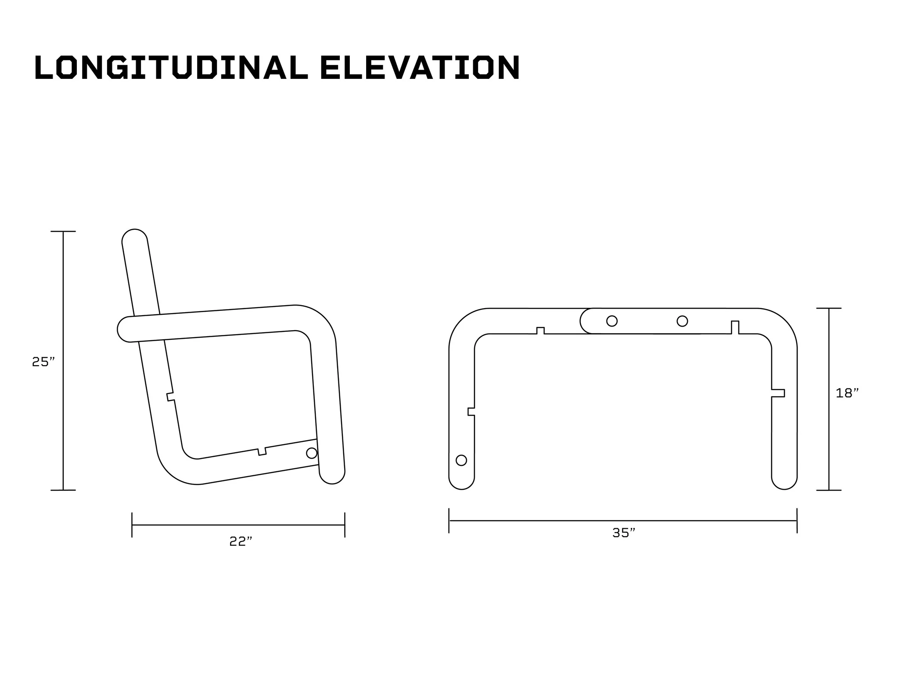
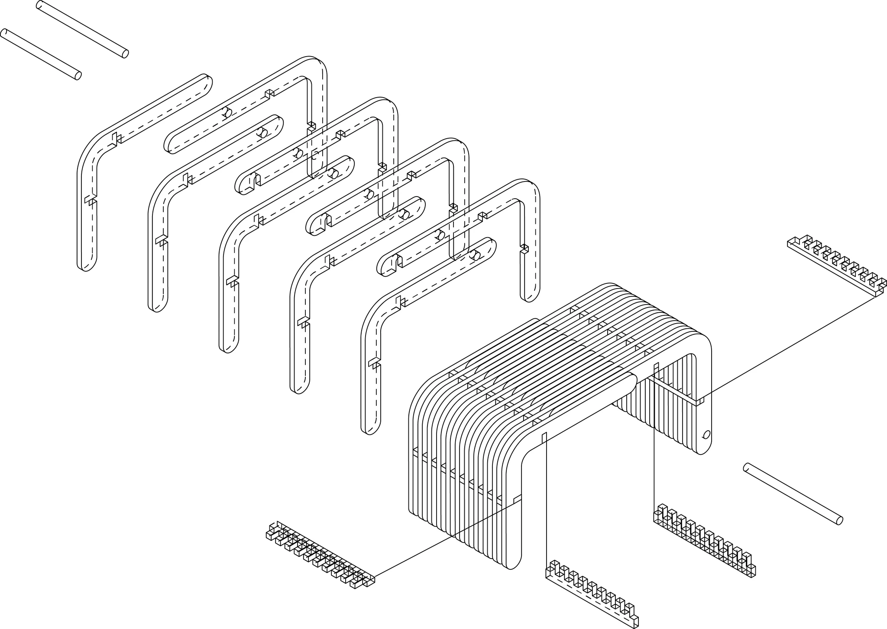
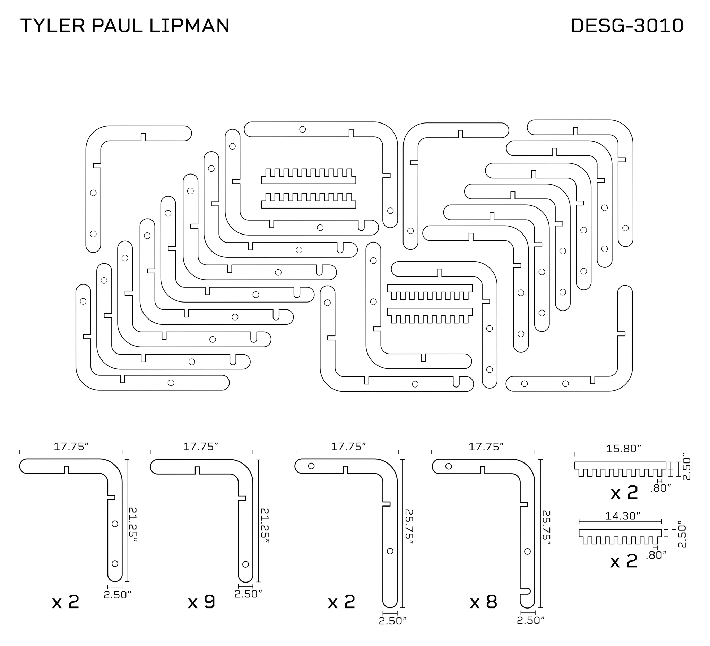

BARE
One plywood object. Two ways to sit.
- Year
- 2026
- Duration
- 2 months
- Context
- Prototyping studio
- Process
- Rhino 3D · CNC · Assembly

Two uses.
One structure.
BARE combines a chair and a bench through one visible system of plywood slats, comb joints, and dowels. The structure gives the object its rhythm and makes the change in function possible.
The studio brief called for multifunctional seating made primarily from CNC-milled plywood. The design challenge was to let a single set of components support two different postures.
A backrest
that becomes a seat.
The back piece pivots around a dowel to change the profile of the object. A second connection holds the bench configuration. The mechanism stays exposed, making the relationship between movement and structure easy to read.


Refining the
slatted profile.
Early iterations explored the relationship between the seat, backrest, and supporting legs. Plans and elevations compare the chair and bench configurations while keeping the repeated plywood profile as the organizing element.






Flat profiles.
Connected as a whole.
The cut plan nests the slat profiles and comb connectors as flat parts, with connection notches and holes integrated into the geometry. The exploded assembly shows how those repeated parts align around the dowels.



